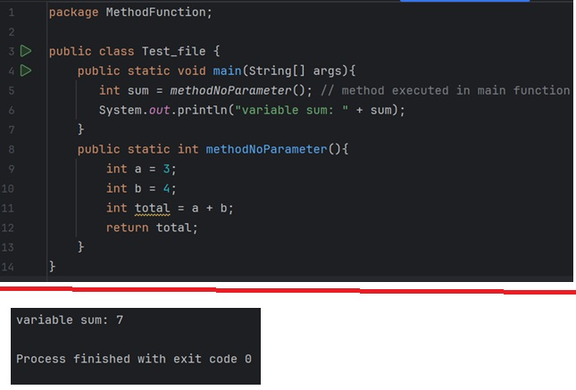
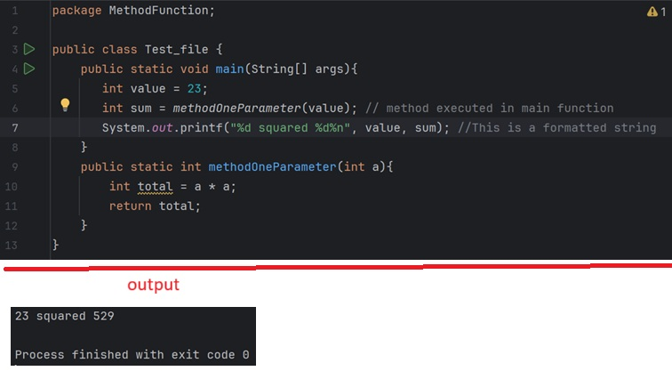
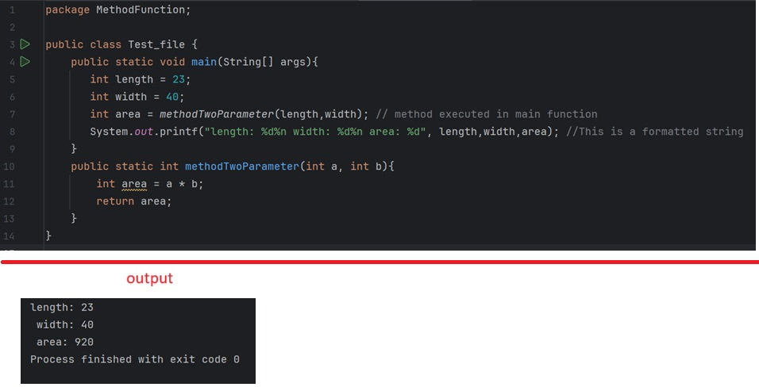
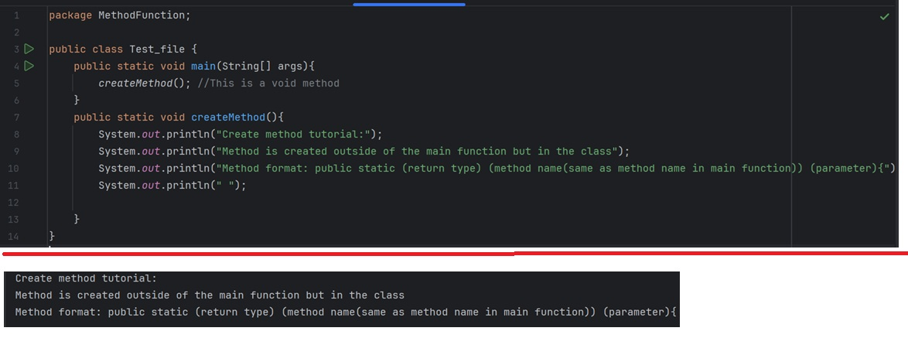
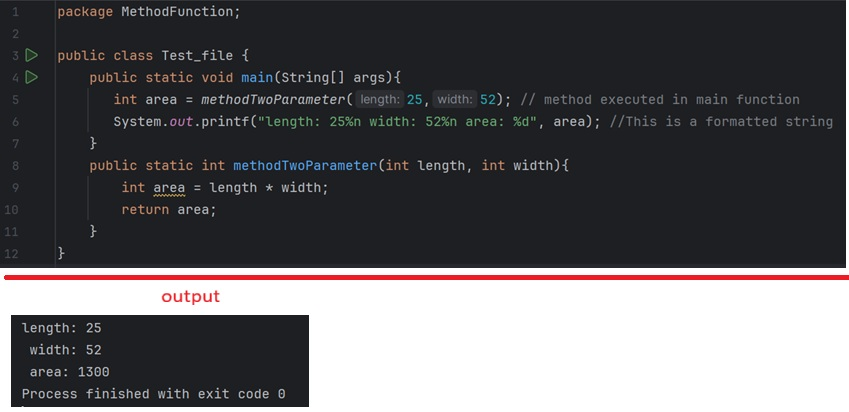
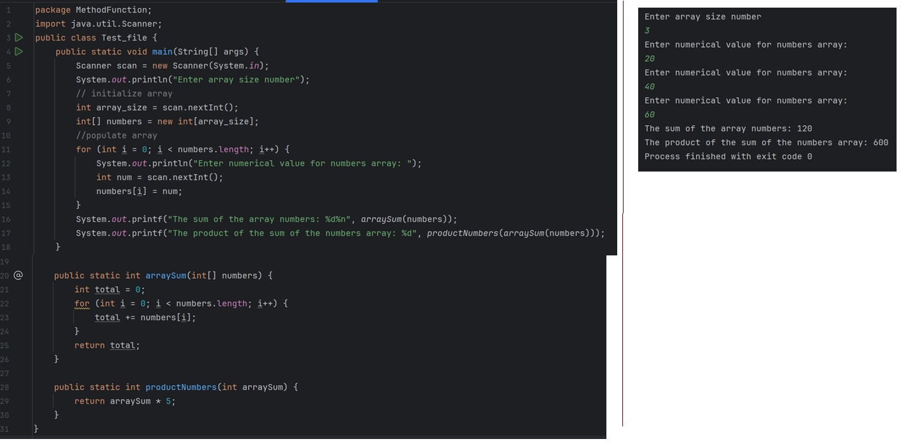
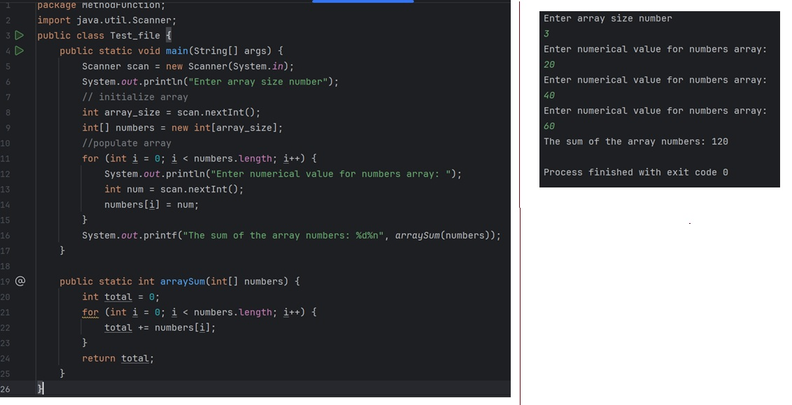

Returning method creation no parameters

Create returning method one parameter

Create returning method with two parameters

creating void method

Method creation with defined input as arguement

create method with another method as parameter

method call with array parameter
